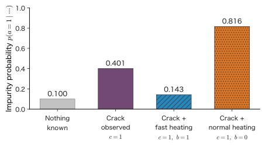
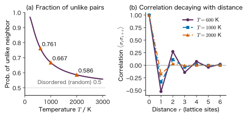

Chapter 19Graphical Models — Factorizing a Joint Distribution with Diagrams
- With 20 binary variables, the table of the joint distribution has more than a million rows. How can we factorize it into a manageable size?
- A crack is found in a sintered body, and we also learn that the temperature was raised too fast. Does the probability that “the raw material contained impurities” go up or down?
- Does an arrow in a graph mean “cause → effect”? From data showing that samples containing an additive were denser, may we say that “adding the additive makes the sample denser”?
Consider four binary quantities: firing temperature, grain size, hardness, and the inspection verdict. Writing their joint distribution as a table means assigning probabilities to $2^{4}=16$ combinations, and even after removing the constraint that the probabilities sum to 1, 15 numbers are needed. With 20 variables it is $2^{20}-1=1\,048\,575$ numbers. However, if we use the knowledge that “temperature affects hardness only through grain size” and that “the verdict is determined by hardness alone,” seven numbers suffice in the four-variable case. Even with 20 variables, if each variable depends only on the one immediately before it, 39 numbers suffice. We draw what depends directly on what as a graph, and factorize the joint distribution into a product of small factors along the graph. This is the graphical model of this chapter.
In this chapter we first introduce the directed graph (Bayesian network), which represents dependence by arrows, and check the rules for reading conditional independence off a graph (d-separation) on three basic patterns with numerical examples. We also compute the counterintuitive phenomenon of explaining away here. Next, we redraw the models of earlier chapters (Bayesian linear regression and the Gaussian mixture model) and the hidden Markov model of the following Part VII as graphs. We then treat the undirected graph (Markov random field), whose edges have no direction, the Ising model as an example of it, and the factor graph, which writes both kinds in the same form. In the latter half we derive message passing (the sum-product algorithm), which computes marginal distributions efficiently by exchanging the order of sums, and max-sum, which finds the most probable configuration. Finally, we show numerically the difference between an arrow and a causal relationship, and the difference between observation and intervention, and we rewrite the process–structure–property chain of materials and the cluster expansion of alloys in the language of this chapter.
- From a directed graph, you can write the factorization of the joint distribution $p(\bm{x})=\prod_k p(x_k\mid\mathrm{pa}_k)$ and count the parameters.
- You can check, with equations and numbers, whether conditional independence holds in each of the three patterns tail-to-tail, head-to-tail, and head-to-head. You can read independence off a graph by d-separation.
- You can show explaining away by hand calculation and explain that “conditioning on the effect makes the causes dependent on each other.”
- Using plate notation, you can write the joint distributions of Bayesian linear regression, the Gaussian mixture model, and the hidden Markov model.
- You can explain the relation between the factorization $p(\bm{x})=\frac1Z\prod_C\psi_C(\bm{x}_C)$ of an undirected graph and the Boltzmann distribution, and compute a three-spin Ising model by full enumeration.
- You can compute the marginal distribution on a chain by message passing and explain why the computational cost drops from $O(K^{n})$ to $O(nK^{2})$. You can show the difference between sum-product and max-sum with an example.
- You can explain with numerical examples that the direction of the arrows representing the same joint distribution is not unique, and that conditioning on an observation differs from an intervention.
Sections for the introductory route: This chapter belongs to the detailed route. On the introductory route, you need read only Section 19.12 (Summary). The next chapter to read on the introductory route is Chapter 22.
19.1 The Size of a Joint Distribution — Tables Grow ExponentiallyDetailed Route
19.1.1 What we want to do
In Chapter 2 we handled the joint distribution of two variables with a 2×2 table (Chapter 2, Section 2.2). Given the table, we can compute anything: the marginal distribution by the sum rule, the conditional distribution by the product rule, and the posterior probability by Bayes's theorem. The trouble begins when the number of variables grows.
Let the variables be $x_1,\dots,x_n$, and suppose each takes $K$ possible values ($K=2$ for binary variables). We write them together as $\bm{x}=(x_1,\dots,x_n)$. The table of the joint distribution has $K^{n}$ cells, and the probability in each cell is at least 0, with the total equal to 1. Because of the constraint that the total is 1, one cell is determined by the others, so the number of freely chosen values (the parameters) is
\begin{equation} K^{n}-1\quad(K=2\ \text{gives}\ 2^{n}-1) \label{eq:19-full-count} \end{equation}This grows exponentially in $n$. Not only is it hard to store the table, but to estimate the probability of each cell from data, every cell must receive a sufficient number of samples. Preparing samples for $2^{20}$ different conditions is not realistic.
![A graph with the number of binary variables n (from 1 to 30) on the horizontal axis and the number of parameters on the vertical axis on a logarithmic scale. Keeping the full table, the count 2 to the power n minus 1 grows as a straight line on this scale and reaches about 1.05 million at n = 20. The directed graph in which each variable has at most 3 parents, the chain in which each variable has 1 parent (2n minus 1), and the fully independent model (n) all grow slowly, roughly in proportion to n.](figs/ch19_fig19-1.svg)
19.1.2 Shrinking the table with conditional independence
Our clue is the autoregressive decomposition of Chapter 2 (repeated application of the product rule). Any joint distribution can be written as
\begin{equation} \begin{aligned} &p(x_1,\dots,x_n)\\ &\quad=p(x_1)\,p(x_2\mid x_1)\\ &\qquad\times p(x_3\mid x_1,x_2)\\ &\qquad\times\cdots\\ &\qquad\times p(x_n\mid x_1,\dots,x_{n-1}) \end{aligned} \label{eq:19-chainrule} \end{equation}(Chapter 2, Section 2.2; this is an identity that involves no approximation). As it stands, the last factor $p(x_n\mid x_1,\dots,x_{n-1})$ alone needs $(K-1)K^{n-1}$ parameters, so nothing has been saved. However, if conditional independence (Chapter 2, Section 2.3) holds, such as "once $x_2$ is known, $x_3$ does not depend on $x_1$," then the conditioning of a factor can be shortened: $p(x_3\mid x_1,x_2)=p(x_3\mid x_2)$. The shorter the conditioning, the smaller the table.
The table of the conditional distribution $p(x_k\mid\text{conditions})$ of a $K$-valued variable $x_k$ holds "$K$ probabilities summing to 1" for each combination of values of the conditioning variables, so if the conditions are $m$ variables that each take $K$ values, it has $(K-1)K^{m}$ parameters.
- Fully independent (all conditions empty): $n(K-1)$ parameters. For binary variables, $n$ parameters.
- Chain (each variable depends only on the single preceding one: $p(x_k\mid x_1,\dots,x_{k-1})=p(x_k\mid x_{k-1})$): $(K-1)+(n-1)(K-1)K$ parameters. For binary variables, $1+2(n-1)=2n-1$ parameters.
A fully independent model is small, but it cannot express any relationship between the variables. Keeping "only the direct dependences," as in a chain, is the middle path, and a diagram that shows where the dependences are kept is the directed graph of the next section (Figure 19.1).
Example 19.1: Counting the parameters of 20 variables
There are $n=20$ binary variables. Find the number of parameters in each of the following cases: (1) keeping the full table; (2) all variables independent; (3) the chain; (4) the first variable has no parent, the second is conditioned on one variable, and the third and later variables are each conditioned on two variables. (5) If each variable takes 3 values ($K=3$), what are the answers for (1) and (3)?
Solution. (1) By Eq. \eqref{eq:19-full-count}, $2^{20}-1=1\,048\,576-1=1\,048\,575$. (2) One parameter $p(x_k=1)$ for each variable, so $20$. (3) One parameter for $x_1$, and for each of the 19 variables $x_2,\dots,x_{20}$ two parameters, $p(x_k=1\mid x_{k-1}=0)$ and $p(x_k=1\mid x_{k-1}=1)$, so $1+19\times2=39$. (4) The number of combinations of values of the conditions is $2^{m}$, so $2^{0}+2^{1}+18\times2^{2}=1+2+72=75$. (5) The table has $3^{20}-1=3\,486\,784\,400$ (about 3.5 billion), and the chain has $(3-1)+19\times(3-1)\times3$ $=2+114=116$.
19.2 Directed Graphs (Bayesian Networks) — Conditioning Only on the ParentsDetailed Route
19.2.1 Definitions and notation
A graph consists of vertices (here, random variables) and edges connecting pairs of vertices. A graph whose edges have a direction is called a directed graph, and one whose edges do not is called an undirected graph. In a directed graph, when there is an arrow $x_j\to x_k$, $x_j$ is called a parent of $x_k$, and $x_k$ is called a child of $x_j$. When we can go from $x_j$ to $x_k$ by following several arrows, $x_j$ is an ancestor of $x_k$ and $x_k$ is a descendant of $x_j$. A directed graph with no path that follows the arrows and returns to its starting point (a directed cycle) is called a directed acyclic graph (DAG).
Notation: Symbols Used in This Chapter
The variables are $x_1,\dots,x_n$ ($n$ of them), written together as $\bm{x}$. The number of values each variable takes is $K$ (the $K$ of this chapter is a different quantity from the Gram matrix $\bm{K}$ of Chapter 10). The set of parents of $x_k$ is written $\mathrm{pa}_k$. The number of data points $N$ is used only for the plates in Section 19.4. For an undirected graph, the potential is written $\psi$, the normalization constant (partition function) $Z$; for a factor graph, a factor is written $f$ and a message $m$. In the Ising model of Section 19.5, the spins are $s_i\in\{-1,+1\}$, the external field is $h$ (distinct from the activation function $h(\cdot)$ of Chapter 14), and $\beta=1/(k_{\mathrm B}T)$ is the inverse temperature.
Definition 19.1: Bayesian network (directed graphical model)
Place a random variable $x_k$ at each vertex of a directed acyclic graph, and give each vertex a conditional distribution $p(x_k\mid\mathrm{pa}_k)$. The distribution defined by setting the joint distribution to
\begin{equation} p(\bm{x})=\prod_{k=1}^{n}p(x_k\mid\mathrm{pa}_k) \label{eq:19-bn} \end{equation}is called a Bayesian network or a directed graphical model. For a vertex with no parents, read $p(x_k\mid\mathrm{pa}_k)=p(x_k)$.
We can check that Eq. \eqref{eq:19-bn} really is a probability distribution (its total is 1) as follows. In a directed acyclic graph, the vertices can be arranged so that every parent comes before its children (a topological order; since there is no cycle, it suffices to remove vertices successively, starting from those with no parents). Renumber the variables $x_1,\dots,x_n$ in this order. Then the last variable $x_n$ is a parent of nobody, so the sum over $x_n$ acts only on the last factor, and it disappears because $\sum_{x_n}p(x_n\mid\mathrm{pa}_n)=1$. Next, summing over $x_{n-1}$, the same thing happens. Repeating this down to $x_1$, the total sum is 1.
Compared with Eq. \eqref{eq:19-chainrule}, Eq. \eqref{eq:19-bn} adopts the assumption that "among the variables that come earlier in the topological order, those other than the parents may be dropped from the conditioning." Writing the number of parents of each vertex as $|\mathrm{pa}_k|$, when all variables are $K$-valued the number of parameters is
\begin{equation} \sum_{k=1}^{n}(K-1)\,K^{|\mathrm{pa}_k|} \label{eq:19-param-count} \end{equation}If the number of parents is at most $m$, this is at most $n(K-1)K^{m}$, and it grows only in proportion to $n$.
19.2.2 Illustration: manufacturing conditions → microstructure → property → measured value
Take the sintering of ceramics as an example. A high firing temperature makes the grains grow and coarsen, and coarse grains tend to lower the hardness. In metals, the relation in which finer grains give a higher yield stress, because grain boundaries impede the motion of dislocations, is known as the Hall–Petch relation (Hall, 1951), and it has been reported that even for dense alumina, finer grains give higher hardness (Krell & Blank, 1995). However, the strength of the relation between grain size and hardness varies with the material, the range of grain sizes, and the porosity. Measuring the hardness and checking it against a specification decides pass or fail. We represent this with the following four binary variables (all numerical values are hand-chosen numerical examples for teaching purposes, set only for explanation, and no random numbers are used; the same holds for the other probability tables in this chapter).
- $x_1$: firing temperature ($1$ = high, $0$ = low). $p(x_1=1)=0.5$.
- $x_2$: grain size ($1$ = coarse, $0$ = fine). $p(x_2=1\mid x_1=1)=0.7$, $p(x_2=1\mid x_1=0)=0.2$.
- $x_3$: hardness ($1$ = high, $0$ = low). $p(x_3=1\mid x_2=0)=0.8$, $p(x_3=1\mid x_2=1)=0.3$.
- $x_4$: inspection result ($1$ = pass, $0$ = fail). $p(x_4=1\mid x_3=1)=0.9$, $p(x_4=1\mid x_3=0)=0.15$.
Assume that the temperature affects the hardness only through the grain size, and that the inspection result is determined by the hardness alone. Then the graph is the chain $x_1\to x_2\to x_3\to x_4$ (Figure 19.2), and Eq. \eqref{eq:19-bn} becomes
\begin{equation} \begin{aligned} &p(x_1,x_2,x_3,x_4)\\ &\quad=p(x_1)\,p(x_2\mid x_1)\\ &\qquad\times p(x_3\mid x_2)\,p(x_4\mid x_3) \end{aligned} \label{eq:19-chain4} \end{equation}The number of parameters is $1+2+2+2=7$, which is less than half of the $2^{4}-1=15$ needed when the full table is kept.
Example 19.2: Computing probabilities with the process chain
For the model of Figure 19.2, find (1) the probability $p(x_1=1,x_2=0,x_3=1,x_4=1)$ that the sample is fired at a high temperature, has fine grains, has high hardness, and passes; (2) the probability $p(x_2=1)$ that the grains are coarse; (3) the probability $p(x_3=1)$ that the hardness is high; (4) the probability $p(x_4=1)$ of passing.
Solution. (1) Substitute into Eq. \eqref{eq:19-chain4}. Since $p(x_2=0\mid x_1=1)=1-0.7=0.3$,
$$ \begin{aligned} p(1,0,1,1)&=0.5\times0.3\times0.8\times0.9\\ &=0.108 . \end{aligned} $$(2) Eliminate $x_1$ by the sum rule and the product rule.
$$ \begin{aligned} p(x_2=1)&=\sum_{x_1}p(x_1)\,p(x_2=1\mid x_1)\\ &=0.5\times0.7+0.5\times0.2=0.45 . \end{aligned} $$(3) In the same way, eliminate $x_2$. Using $p(x_2=0)=1-0.45=0.55$,
$$ \begin{aligned} p(x_3=1)&=\sum_{x_2}p(x_2)\,p(x_3=1\mid x_2)\\ &=0.55\times0.8+0.45\times0.3\\ &=0.44+0.135=0.575 . \end{aligned} $$(4) Using $p(x_3=0)=0.425$, $p(x_4=1)=0.575\times0.9+0.425\times0.15$ $=0.5175+0.06375$ $=0.58125$.
In (2)–(4), we repeated the operation of multiplying the marginal distribution of the previous variable by the next conditional distribution and summing. That we obtained the answers without a full enumeration of the 16 cases is thanks to the chain form. This operation is the simplest form of the message passing in Section 19.7.
19.3 Conditional Independence and d-Separation — Three Basic Patterns and Explaining AwayDetailed Route
19.3.1 Three basic patterns
The value of a graph is that, from the factorization in Eq. \eqref{eq:19-bn}, we can read off which conditional independences hold from the diagram alone. To do so, we examine the three basic patterns formed by three variables $a,b,c$ (Figure 19.3). The base of an arrow is called its tail and the tip its head, and we name each pattern by how the arrows meet at $c$.
(1) tail-to-tail ($a\leftarrow c\to b$; common cause). Eq. \eqref{eq:19-bn} gives $p(a,b,c)=p(c)\,p(a\mid c)\,p(b\mid c)$. Conditioning on $c$ and using the product rule $p(a,b\mid c)=p(a,b,c)/p(c)$, we obtain
\begin{equation} \begin{aligned} &p(a,b\mid c)\\ &\quad=\frac{p(c)\,p(a\mid c)\,p(b\mid c)}{p(c)}\\ &\quad=p(a\mid c)\,p(b\mid c) \end{aligned} \label{eq:19-tt} \end{equation}so $a$ and $b$ are conditionally independent given $c$. On the other hand, when $c$ is not known, $p(a,b)=\sum_c p(c)\,p(a\mid c)\,p(b\mid c)$, which in general is not equal to $p(a)\,p(b)$. Illustration 2.1 of Chapter 2 (testing the same sample twice) is a numerical example of this pattern (Chapter 2, Section 2.3): if the state $c$ of the sample is known, the results of the two inspections are independent, but if the state is not known, the result of the first inspection changes our prediction for the second.
(2) head-to-tail ($a\to c\to b$; relay). Here $p(a,b,c)=p(a)\,p(c\mid a)\,p(b\mid c)$. Conditioning on $c$ gives
$$ \begin{aligned} p(a,b\mid c)&=\frac{p(a)\,p(c\mid a)\,p(b\mid c)}{p(c)}\\ &=\frac{p(a,c)}{p(c)}\,p(b\mid c)=p(a\mid c)\,p(b\mid c). \end{aligned} $$In the second line we used the product rule $p(a)\,p(c\mid a)=p(a,c)$. Thus $a$ and $b$ are conditionally independent given $c$. When $c$ is not known, $p(a,b)=p(a)\sum_c p(c\mid a)\,p(b\mid c)$, and $p(b\mid a)=\sum_c p(c\mid a)\,p(b\mid c)$ in general depends on $a$, so they are not independent.
(3) head-to-head ($a\to c\leftarrow b$; common effect. We call $c$ a collider). Here $p(a,b,c)=p(a)\,p(b)\,p(c\mid a,b)$. Summing over $c$, and using $\sum_c p(c\mid a,b)=1$, we obtain
\begin{equation} \begin{aligned} &p(a,b)\\ &\quad=p(a)\,p(b)\sum_{c}p(c\mid a,b)\\ &\quad=p(a)\,p(b) \end{aligned} \label{eq:19-hh} \end{equation}so when $c$ is not known, $a$ and $b$ are independent. When we condition on $c$, however, $p(a,b\mid c)=p(a)\,p(b)\,p(c\mid a,b)/p(c)$, and this is not equal to $p(a\mid c)\,p(b\mid c)$ unless $p(c\mid a,b)$ splits into a product of a function of $a$ and a function of $b$. Observing a common effect makes causes that were independent become dependent. This is the opposite of the other two patterns. Moreover, even if we observe not $c$ itself but a descendant of $c$, the same thing happens, because we then obtain information about $c$.
Example 19.3: Conditioning on the relay variable makes the variables independent
For the process chain of Figure 19.2, (1) find $p(x_3=1\mid x_1=1)$ and $p(x_3=1\mid x_1=0)$, and verify that the firing temperature and the hardness are not independent. (2) Verify that, when the grain size is known to be fine ($x_2=0$), $p(x_3=1\mid x_1,x_2=0)$ does not depend on $x_1$.
Solution. (1) We sum over $x_2$ (using the sum rule and the product rule; since $x_1\to x_2\to x_3$, we have $p(x_3\mid x_1,x_2)=p(x_3\mid x_2)$).
$$ \begin{aligned} p(x_3=1\mid x_1=1)&=0.3\times0.8+0.7\times0.3\\ &=0.24+0.21=0.45,\\ p(x_3=1\mid x_1=0)&=0.8\times0.8+0.2\times0.3\\ &=0.64+0.06=0.70. \end{aligned} $$Since the values differ, $x_1$ and $x_3$ are not independent (firing at a high temperature lowers the probability that the hardness is high). (2) Computing directly from the definition, we get
$$ \begin{aligned} &p(x_3=1\mid x_1,x_2=0)\\ &\quad=\frac{p(x_1)\,p(x_2=0\mid x_1)\,p(x_3=1\mid x_2=0)}{p(x_1)\,p(x_2=0\mid x_1)}\\ &\quad=p(x_3=1\mid x_2=0)=0.8 \end{aligned} $$which is 0.8 for both $x_1=0$ and $x_1=1$. Once the grain size is known, the temperature gives no new information about the hardness. The effect of the temperature flows only along the path through the grain size, and observing $x_2$ blocks that path.
19.3.2 Explaining away — conditioning on a common effect
The head-to-head pattern can be counterintuitive, so we check it with numbers. Suppose that a crack $c$ in a sintered body has two possible causes: impurities mixed into the raw powder, $a$, and a heating rate that was too fast, $b$. Suppose that the two causes occur independently of each other (a setting for teaching purposes).
- $p(a=1)=0.1$, $p(b=1)=0.2$ ($a$ and $b$ are independent).
- $p(c=1\mid a=0,b=0)=0.02$, $p(c=1\mid a=1,b=0)=0.8$, $p(c=1\mid a=0,b=1)=0.6$, $p(c=1\mid a=1,b=1)=0.9$.
Example 19.4: Explaining away by hand calculation
In the setting above, find (1) the probability $p(a=1\mid c=1)$ that impurities were present when a crack is found, (2) $p(a=1\mid c=1,b=1)$ when a crack is found and the furnace record further shows that the heating rate was too fast, and (3) $p(a=1\mid c=1,b=0)$ when a crack is found and the heating rate is known to have been normal.
Solution. First we compute the joint probability $p(a)\,p(b)\,p(c=1\mid a,b)$ of $c=1$ and each $(a,b)$.
$$ \begin{aligned} (a,b)=(0,0)&:\ 0.9\times0.8\times0.02=0.0144,\\ (1,0)&:\ 0.1\times0.8\times0.8=0.064,\\ (0,1)&:\ 0.9\times0.2\times0.6=0.108,\\ (1,1)&:\ 0.1\times0.2\times0.9=0.018. \end{aligned} $$Their sum is $p(c=1)=0.2044$. (1) We add the two rows with $a=1$ and divide.
$$ \begin{aligned} p(a=1\mid c=1)&=\frac{0.064+0.018}{0.2044}\\ &=\frac{0.082}{0.2044}\approx0.401 . \end{aligned} $$Merely seeing the crack raises the probability of impurities from the prior 0.1 to 0.401. (2) We use only the two rows with $b=1$.
$$ \begin{aligned} p(a=1\mid c=1,b=1)&=\frac{0.018}{0.108+0.018}\\ &=\frac{0.018}{0.126}\approx0.143 . \end{aligned} $$(3) We use only the two rows with $b=0$.
$$ \begin{aligned} p(a=1\mid c=1,b=0)&=\frac{0.064}{0.0144+0.064}\\ &=\frac{0.064}{0.0784}\approx0.816 . \end{aligned} $$When we learn that the heating rate was too fast, the crack is “accounted for by that,” so the probability of impurities falls from 0.401 to 0.143. Conversely, when we learn that the heating rate was normal, impurities remain as the explanation of the crack, so the probability rises to 0.816. When the crack is not known, $p(a=1\mid b=1)=p(a=1)=0.1$, which does not depend on $b$ (Eq. \eqref{eq:19-hh}). Only when the common effect $c$ is observed does information about $b$ move the probability of $a$. This is called explaining away (Figure 19.4).

19.3.3 d-separation
d-separation is the extension of the three basic patterns to a general graph. A path connecting two vertices of a graph is a route that follows edges while ignoring the directions of the arrows. At each intermediate vertex of the path, we look at whether the two neighboring arrows meet tail-to-tail, head-to-tail, or head-to-head.
Definition 19.2: d-separation
Let $A,B,C$ be mutually disjoint sets of vertices. If a path connecting a vertex of $A$ and a vertex of $B$ contains, as an intermediate vertex, either of the following, the path is said to be blocked by $C$.
- The arrows meet head-to-tail or tail-to-tail, and that vertex is contained in $C$.
- The arrows meet head-to-head, and neither that vertex nor any of its descendants is contained in $C$.
When every path connecting $A$ and $B$ is blocked, $A$ and $B$ are said to be d-separated by $C$. In that case, for every distribution that factorizes as in Eq. \eqref{eq:19-bn}, $A$ and $B$ are conditionally independent given $C$.
The proof of the latter claim (d-separation implies conditional independence) combines the computations for the three basic patterns along a path (see Koller and Friedman (2009) for details). In this chapter we use it as a statement, and verify it numerically in Exercise 19.2. What deserves attention is the converse: even if two sets are not d-separated, they are not necessarily dependent in a particular distribution (if the numerical values of the conditional distributions happen to balance, they can be independent). The graph guarantees only the direction “d-separated implies independent.”
19.3.4 Markov blanket
For a vertex $x_k$, consider the distribution $p(x_k\mid\bm{x}_{\setminus k})$ conditioned on all the other variables ($\bm{x}_{\setminus k}$ denotes all the variables other than $x_k$). Substituting Eq. \eqref{eq:19-bn}, the factors that do not contain $x_k$ cancel between the numerator and the denominator, and what remains is
\begin{equation} \begin{aligned} &p(x_k\mid\bm{x}_{\setminus k})\\ &\quad=\frac{p(x_k\mid\mathrm{pa}_k)\,G(x_k)}{\sum_{x_k}p(x_k\mid\mathrm{pa}_k)\,G(x_k)},\\ &G(x_k)\equiv\prod_{j:\,x_k\in\mathrm{pa}_j}p(x_j\mid\mathrm{pa}_j) \end{aligned} \label{eq:19-blanket} \end{equation}The variables that remain are only the parents of $x_k$, its children, and the other parents of its children (co-parents). This set is called the Markov blanket of $x_k$. Once we know the blanket, $x_k$ is conditionally independent of everything else. The other parents of the children enter because a child becomes a head-to-head collider. Gibbs sampling in Chapter 21 is a method that draws samples one variable at a time from a conditional distribution of the form of Eq. \eqref{eq:19-blanket} (Chapter 21, Section 21.9).
19.4 Plate Notation and Diagrams of the Models So FarDetailed Route
19.4.1 Drawing repetition with a box
In a model that handles $N$ data points, $N$ vertices of the same shape appear side by side. Instead of drawing them every time, we draw just one set, enclose it in a rectangular box, and write the number of repetitions $N$ at the corner of the box. This box is called a plate. We also adopt the following conventions (Figure 19.5).
- A random variable is a white circle, and a random variable that has been observed is a gray filled circle.
- A fixed quantity that is not treated as a random variable (a hyperparameter, or a given input) is a small black dot.
19.4.2 Bayesian linear regression
In the Bayesian linear regression of Chapter 8 (Chapter 8, Section 8.7), we placed a prior distribution $p(\bm{w})=\Normal(\bm{w}\mid\bm{0},\sigma_w^{2}\bm{I})$ on the weights $\bm{w}\in\R^{M}$, and for a given input $\bm{x}_n\in\R^{D}$ we wrote the observation as $y_n=\bm{w}^{\tp}\bm{\phi}(\bm{x}_n)+\varepsilon_n$, $\varepsilon_n\sim\Normal(0,\sigma^{2})$. Once $\bm{w}$ is known, the $y_n$ are independent of one another (the tail-to-tail pattern), so the joint distribution is
\begin{equation} \begin{aligned} &p(\bm{y},\bm{w}\mid\bm{X})\\ &\quad=p(\bm{w})\\ &\qquad\times\prod_{n=1}^{N}\Normal\bigl(y_n\mid\\ &\qquad\qquad\bm{w}^{\tp}\bm{\phi}(\bm{x}_n),\,\sigma^{2}\bigr) \end{aligned} \label{eq:19-blr} \end{equation}(here $\bm{X}$ collects the inputs, and $\sigma^{2}$ and $\sigma_w^{2}$ are fixed). In Figure 19.5(a), inside the plate of $N$ there are $\bm{x}_n$ (a dot) and $y_n$ (a filled circle), and an arrow enters $y_n$ from $\bm{w}$ outside the plate. Since the observation $y_n$ is a child of $\bm{w}$, observing $y_n$ makes the posterior distribution $p(\bm{w}\mid\bm{y},\bm{X})$ of $\bm{w}$ the quantity to be found. Also, when $\bm{w}$ is not known, $y_1,\dots,y_N$ are dependent through $\bm{w}$. This is why the $y_n$ of the training data affect the prediction $y_*$ at a new point.
19.4.3 Gaussian mixture model
In the Gaussian mixture model of Chapter 17 (Chapter 17, Section 17.3), each data point $\bm{x}_n\in\R^{D}$ has a latent variable $\bm{z}_n\in\{0,1\}^{K}$ (one-hot; here $K$ is the number of components) that indicates which component it came from. The generative procedure is: “choose component $k$ according to the mixing coefficients $\pi_k$ ($p(z_{nk}=1)=\pi_k$), and draw $\bm{x}_n$ from the Gaussian distribution $\Normal(\bm{x}_n\mid\bm{\mu}_k,\bm{\Sigma}_k)$ of that component.” The joint distribution is
\begin{equation} \begin{aligned} &p(\bm{X},\bm{Z})\\ &\quad=\prod_{n=1}^{N}\prod_{k=1}^{K}\bigl[\pi_k\\ &\qquad\times\Normal(\bm{x}_n\mid\bm{\mu}_k,\bm{\Sigma}_k)\bigr]^{z_{nk}} \end{aligned} \label{eq:19-gmm} \end{equation}and in Figure 19.5(b) the arrow $\bm{z}_n\to\bm{x}_n$ lies inside the plate of $N$, while the parameters $\bm{\mu}_k,\bm{\Sigma}_k$ of each component lie inside the plate of $K$. Only $\bm{x}_n$ is observed, and $\bm{z}_n$ remains a white circle (latent). The responsibility $\gamma_{nk}=p(z_{nk}=1\mid\bm{x}_n)$ is nothing other than the posterior probability of the parent $\bm{z}_n$ when the child $\bm{x}_n$ is observed. Note that the symbol $\pi$ is used with different meanings: the mixing coefficients (here), the initial distribution (Chapter 22), and the ratio of a circle's circumference to its diameter.
19.4.4 (Preview) Hidden Markov model
The hidden Markov model of Chapter 22 is a graph in which the hidden states $z_t\in\{1,\dots,K\}$ form a chain $z_1\to z_2\to\cdots\to z_T$, and the observation $x_t$ at each time step is a child of $z_t$ alone (Figure 19.5(c)). Applying Eq. \eqref{eq:19-bn} directly gives
\begin{equation} \begin{aligned} &p(x_{1:T},z_{1:T})\\ &\quad=p(z_1)\prod_{t=2}^{T}p(z_t\mid z_{t-1})\\ &\qquad\times\prod_{t=1}^{T}p(x_t\mid z_t) \end{aligned} \label{eq:19-hmm} \end{equation}If $z_t$ is known, the past observations $x_{1:t-1}$ and the future observations $x_{t+1:T}$ are d-separated (every path through $z_t$ is head-to-tail or tail-to-tail, and is blocked because $z_t$ is observed). The forward algorithm and the backward algorithm of Chapter 22 use this property to carry out the message passing of Section 19.7 along the direction of time (Chapter 22, Section 22.5, 22.6).
Example 19.5: If the parameter is unknown, even i.i.d. observations become dependent
Perform two Bernoulli trials with success probability $\mu$, and let the results be $x_1,x_2\in\{0,1\}$. Let the prior distribution of $\mu$ be the uniform distribution $\mathrm{Beta}(\mu\mid1,1)$ on the interval $[0,1]$. The graph is $x_1\leftarrow\mu\to x_2$. (1) When $\mu$ is known, are $x_1$ and $x_2$ independent? (2) Find $p(x_1=1)$, $p(x_1=1,x_2=1)$, and $p(x_2=1\mid x_1=1)$, and determine whether they are independent when $\mu$ is not known.
Solution. (1) This is the tail-to-tail pattern and $\mu$ is observed, so by Eq. \eqref{eq:19-tt} they are independent: $p(x_1,x_2\mid\mu)=p(x_1\mid\mu)\,p(x_2\mid\mu)$. This is the meaning of “i.i.d. (independent and identically distributed).” (2) Integrate over $\mu$ (the sum rule for a continuous variable).
$$ \begin{aligned} p(x_1=1)&=\int_0^1\mu\cdot1\,\dd\mu=\frac12,\\ p(x_1=1,x_2=1)&=\int_0^1\mu^{2}\cdot1\,\dd\mu=\frac13 . \end{aligned} $$Hence $p(x_2=1\mid x_1=1)=\dfrac{1/3}{1/2}=\dfrac23$. This differs from $p(x_2=1)=\tfrac12$, so when $\mu$ is not known, $x_1$ and $x_2$ are not independent. The reason is that a success on the first trial gives the information that “$\mu$ seems to be fairly large,” which changes the prediction for the second trial. The value $\tfrac23$ agrees with the posterior predictive probability $(a+m)/(a+b+N)$ $=(1+1)/(1+1+1)$ of Chapter 4 (Chapter 4, Section 4.5). In Bayesian inference, “learning from data” means exploiting this dependence.
19.5 Undirected Graphs (Markov Random Fields) — Products of Potentials and the Boltzmann DistributionDetailed Route
19.5.1 Dependence without direction
Directed graphs suit problems in which the “procedure of generation” is known. On the other hand, there are also symmetric dependences in which neither side can be called the cause, such as the species of atoms placed on the lattice points of a crystal, or adjacent pixels in an image. The relation that neighbors “tend to be the same” or “tend to differ” has no direction. Such dependences are drawn with edges that have no direction, and the joint distribution is expressed not as a product of conditional distributions but as a product of positive functions.
In an undirected graph, a set of vertices in which every two vertices are joined by an edge is called a clique, and a clique to which no further vertex can be added without ceasing to be a clique is called a maximal clique. For example, the maximal cliques of the three-vertex chain $s_1-s_2-s_3$ are $\{s_1,s_2\}$ and $\{s_2,s_3\}$ ($\{s_1,s_3\}$ is not a clique because there is no edge between them).
Definition 19.3: Markov random field (undirected graphical model)
Let $\mathcal{C}$ be the set of cliques of an undirected graph, and write $\bm{x}_C$ for the tuple of variables belonging to each clique $C\in\mathcal{C}$. Given nonnegative functions $\psi_C(\bm{x}_C)$ (potentials), the distribution defined by
\begin{equation} \begin{aligned} p(\bm{x})&=\frac{1}{Z}\prod_{C\in\mathcal{C}}\psi_C(\bm{x}_C),\\ Z&=\sum_{\bm{x}}\prod_{C\in\mathcal{C}}\psi_C(\bm{x}_C) \end{aligned} \label{eq:19-mrf} \end{equation}is called a Markov random field or an undirected graphical model. $Z$ is called the partition function (normalization constant). For continuous variables, replace the sum by an integral.
There are two differences from directed graphs. First, $\psi_C$ is neither a probability nor a conditional probability, and there is no constraint that it sum to 1. The job of making the total sum equal to 1 is taken over entirely by $Z$. Second, that $Z$ is a sum over all combinations of all the variables, so with $n$ variables it is a sum of $K^{n}$ terms. This contrasts with directed graphs, where $Z=1$ held automatically (Section 19.2).
19.5.2 Graph separation and conditional independence
Reading conditional independence off an undirected graph is simpler than for a directed graph. When every path connecting the sets of vertices $A$ and $B$ passes through some vertex of $C$ (that is, when removing $C$ disconnects $A$ from $B$), $A$ and $B$ are conditionally independent given $C$. There is no exception like head-to-head. For example, for the chain $s_1-s_2-s_3$, Eq. \eqref{eq:19-mrf} reads $p=\psi_{12}(s_1,s_2)\,\psi_{23}(s_2,s_3)/Z$, and once $s_2$ is fixed it splits into a product of a function of $s_1$ and a function of $s_3$, so $s_1$ and $s_3$ are conditionally independent.
Conversely, a distribution that satisfies all the conditional independences that can be read from graph separation can be written in the form of Eq. \eqref{eq:19-mrf} provided that $p(\bm{x})\gt0$ for all $\bm{x}$. This is the Hammersley–Clifford theorem (for the proof, see Besag (1974)).
What is lost when a directed graph is converted to an undirected graph?
The factor $p(x_k\mid\mathrm{pa}_k)$ of a directed graph contains $x_k$ and all of its parents, so for it to become a single potential in an undirected graph, $x_k$ and its parents must form a single clique. We therefore join the parents that share the same child by edges (“marry” them) and erase the directions of the arrows. This is called moralization. Moralizing the head-to-head graph $a\to c\leftarrow b$ gives a triangle on $a,b,c$ (Figure 19.6(b)), and the property of Eq. \eqref{eq:19-hh}, “if $c$ is not known, $a$ and $b$ are independent,” can no longer be read from the graph. There are independences that can be expressed only by directed graphs, and independences that can be expressed only by undirected graphs (for example, a ring of four vertices).
19.5.3 Potentials and energy — the Boltzmann distribution
If a potential is positive, it can be written as $\psi_C(\bm{x}_C)=\exp\bigl(-E_C(\bm{x}_C)\bigr)$. Calling the sum $E(\bm{x})=\sum_C E_C(\bm{x}_C)$ of the $E_C$ the energy, Eq. \eqref{eq:19-mrf} becomes
\begin{equation} \begin{aligned} p(\bm{x})&=\frac{1}{Z}\exp\bigl(-E(\bm{x})\bigr),\\ Z&=\sum_{\bm{x}}\exp\bigl(-E(\bm{x})\bigr) \end{aligned} \label{eq:19-boltz} \end{equation}In statistical mechanics, the probability that a system in contact with a heat bath at temperature $T$ takes a microscopic state $\bm{x}$ is proportional to $\exp(-\beta E(\bm{x}))$ (the Boltzmann distribution; $\beta=1/(k_{\mathrm B}T)$, $k_{\mathrm B}$ is the Boltzmann constant, and $E$ is the physical energy, with units such as J or eV). If we read $E$ in Eq. \eqref{eq:19-boltz} as $\beta E$, it has exactly the same form, and $Z$ is precisely the partition function (Introductory University Physics, Chapter 50, Section 50.1, Section 50.3). The Boltzmann distribution of a system whose energy splits into a sum over cliques is a Markov random field. A full discussion of the correspondence and the differences is given in Chapter 27.
19.5.4 Illustration: the Ising model of three spins
In the Ising model, the simplest model of a magnetic material, each lattice point $i$ carries a two-valued spin $s_i\in\{+1,-1\}$ (up or down), and interactions are considered only for pairs $\langle ij\rangle$ of neighboring lattice points.
\begin{equation} \begin{aligned} E(\bm{s})&=-J\sum_{\langle ij\rangle}s_is_j\\ &\quad-h\sum_i s_i \end{aligned} \label{eq:19-ising} \end{equation}$J$ (in units such as eV) is the strength of the exchange interaction; if $J\gt0$, the energy is lower when neighbors point in the same direction (ferromagnetism), and $h$ is a term representing the effect of an external magnetic field. The Boltzmann distribution $p(\bm{s})\propto\exp(-\beta E(\bm{s}))$ is a product of the edge potentials $\psi_{ij}=\exp(\beta Js_is_j)$ and the vertex potentials $\exp(\beta hs_i)$, so it is a Markov random field whose edges are exactly the edges of the lattice.
Example 19.6: Full enumeration of a chain of three spins
Three spins form a chain $s_1-s_2-s_3$, with $h=0$ and $\beta J=\ln2$ (that is, $e^{\beta J}=2$). (1) Find the weights $\exp(-\beta E)$ of the eight states and the partition function $Z$. (2) Find the probability $p(+,+,+)$ that all spins point up. (3) Find the nearest-neighbor correlation $\langle s_1s_2\rangle$ and the next-nearest correlation $\langle s_1s_3\rangle$ (skipping one site), where $\langle\cdot\rangle$ denotes the expectation (expected value) under the Boltzmann distribution. (4) Verify that $s_1$ and $s_3$ are conditionally independent given $s_2=+1$.
Solution. (1) $-\beta E=\beta J(s_1s_2+s_2s_3)$. If both edges agree, $s_1s_2+s_2s_3=2$; if only one does, it is $0$; if both disagree, it is $-2$.
- $(+,+,+)$ and $(-,-,-)$: weight $e^{2\beta J}=2^{2}=4$ (2 states).
- $(+,+,-)$, $(-,+,+)$, $(+,-,-)$, $(-,-,+)$: weight $e^{0}=1$ (4 states).
- $(+,-,+)$ and $(-,+,-)$: weight $e^{-2\beta J}=1/4$ (2 states).
Hence $Z=2\times4+4\times1+2\times\tfrac14$ $=8+4+0.5=12.5$. (2) $p(+,+,+)=4/12.5=0.32$. (3) $s_1s_2=+1$ holds for the four states $(+,+,\pm)$ and $(-,-,\pm)$, whose weights sum to $4+1+4+1=10$; the remaining four states have weights summing to $1+0.25+0.25+1=2.5$, so $\langle s_1s_2\rangle=(10-2.5)/12.5=0.6$. $s_1s_3=+1$ holds for $(+,\pm,+)$ and $(-,\pm,-)$, whose weights sum to $4+0.25+0.25+4=8.5$, and the remainder is $4$, so $\langle s_1s_3\rangle=(8.5-4)/12.5=0.36$. (4) The weights of the four states with $s_2=+1$ are $4,1,1,0.25$ (in order, $(+,+,+)$, $(+,+,-)$, $(-,+,+)$, $(-,+,-)$), with sum $6.25$. We have $p(s_1=+,s_3=+\mid s_2=+)$ $=4/6.25=0.64$, $p(s_1=+\mid s_2=+)=(4+1)/6.25=0.8$, and $p(s_3=+\mid s_2=+)=0.8$, and $0.8\times0.8=0.64$ agrees.
In general, for an open chain with $h=0$, $\langle s_is_{i+r}\rangle=\tanh^{r}(\beta J)$. Since $\tanh(\ln2)=(2-\tfrac12)/(2+\tfrac12)=0.6$, the values $0.6$ and $0.6^{2}=0.36$ in (3) agree with this formula. The correlation propagates from directly connected neighbors through the intervening vertices, weakening as it goes.
19.6 Factor Graphs — Writing Directed and Undirected Models in the Same FormDetailed Route
Both Eq. \eqref{eq:19-bn} for directed graphs and Eq. \eqref{eq:19-mrf} for undirected graphs are “a product of functions of several groups of variables.” Drawing this common form directly gives the factor graph.
Definition 19.4: Factor graph
Suppose that the joint distribution (or the function before normalization) can be written as
\begin{equation} p(\bm{x})=\prod_{s}f_s(\bm{x}_s) \label{eq:19-factor} \end{equation}a product of nonnegative functions (factors) $f_s$ of subsets $\bm{x}_s$ of the variables. The graph in which the variables are drawn as circles and the factors as squares, and each factor $f_s$ is joined by edges to the variables on which $f_s$ depends (each component of $\bm{x}_s$), is called a factor graph. Every edge always lies between a circle and a square (a bipartite graph). The $1/Z$ of an undirected graph is either absorbed into one of the factors or written separately.
From a directed graph, we make each conditional distribution $p(x_k\mid\mathrm{pa}_k)$ into one factor and join $x_k$ to its parents. From an undirected graph, we make the potential $\psi_C$ of each clique into one factor. The advantage of the factor graph is that it can distinguish factorizations that an undirected graph cannot. An undirected triangle graph in which all three variables are joined by edges gives the same picture whether the distribution has one factor $f(x_1,x_2,x_3)$ of three variables or three factors $f_{12}f_{23}f_{31}$ of two variables each, but in a factor graph they can be told apart by the number of squares (Figure 19.7(b)). The message passing of the next Sections 19.7 and 19.8 can be written most transparently on a factor graph.
Example 19.7: Size of the factor tables
For three variables $x_1,x_2,x_3$, each taking $K=10$ values, compare the number of entries in the factor tables when the distribution is represented (1) by one factor of three variables, and (2) by three factors of two variables, $f_{12}(x_1,x_2)f_{23}(x_2,x_3)f_{31}(x_3,x_1)$. (3) Give one example of a distribution that cannot be represented in the form (2).
Solution. (1) $K^{3}=1000$ entries. (2) $3K^{2}=300$ entries. (3) Let $x_1,x_2,x_3\in\{0,1\}$, and consider the distribution that places probability $1/4$ on each of the four configurations satisfying $x_3=x_1\oplus x_2$ (exclusive OR). Then the marginal distribution of any two variables is uniform, and looking only at pairwise relations, any two variables appear independent. The relation among the three variables cannot be written as a product of two-variable factors. Indeed, to make $p(0,0,1)=f_{12}(0,0)\,f_{23}(0,1)\,f_{31}(1,0)$ equal to 0, one of the three values must be 0; but $f_{12}(0,0)$ also appears in $p(0,0,0)$, $f_{23}(0,1)$ in $p(1,0,1)$, and $f_{31}(1,0)$ in $p(0,1,1)$, and these are all $1/4$, which is positive, so none of the values can be 0. A “truly three-body” interaction like this requires a factor of three variables. This is also the reason for including three-body clusters in the cluster expansion of alloys (Section 19.10).
19.7 Marginalization on a Chain and Message PassingDetailed Route
19.7.1 Exchanging the order of sums
Decomposing a graph helps not only because it makes the tables smaller. It also makes the computation of marginal distributions and conditional distributions faster. Consider a chain of $n$ variables, each taking $K$ values.
\begin{equation} \begin{aligned} p(\bm{x})&=\frac{1}{Z}\,\psi_{1,2}(x_1,x_2)\\ &\quad\times\psi_{2,3}(x_2,x_3)\cdots\\ &\quad\times\psi_{n-1,n}(x_{n-1},x_n) \end{aligned} \label{eq:19-chain-mrf} \end{equation}The marginal distribution of a variable $x_k$ is the sum over all the remaining $n-1$ variables, $p(x_k)=\sum_{x_1}\cdots\sum_{x_{k-1}}\sum_{x_{k+1}}\cdots\sum_{x_n}p(\bm{x})$. Computed directly, this is a sum of $K^{n-1}$ terms for each value of $x_k$, so the computational complexity is $O(K^{n})$.
So, in the case $n=4$, $k=2$, we push the sums inside the factors. We use the facts that the only factor containing $x_4$ is $\psi_{3,4}$, the only factors containing $x_3$ are $\psi_{2,3}$ and $\psi_{3,4}$, and the only factor containing $x_1$ is $\psi_{1,2}$ (a sum lets us pull out of it any factor that does not contain the summation variable).
$$ \begin{aligned} Z\,p(x_2)&=\sum_{x_1}\sum_{x_3}\sum_{x_4}\psi_{1,2}(x_1,x_2)\\ &\qquad\times\psi_{2,3}(x_2,x_3)\,\psi_{3,4}(x_3,x_4)\\ &=\Bigl[\sum_{x_1}\psi_{1,2}(x_1,x_2)\Bigr]\\ &\qquad\times\Bigl[\sum_{x_3}\psi_{2,3}(x_2,x_3)\sum_{x_4}\psi_{3,4}(x_3,x_4)\Bigr]. \end{aligned} $$The first bracket gathers the information on the left of $x_2$, and the second gathers the information on the right; each is a function of $x_2$. In the right-hand bracket as well, we first compute the inner sum $\sum_{x_4}\psi_{3,4}(x_3,x_4)$ as a function of $x_3$ and then take the outer sum.
19.7.2 Forward and backward messages
We extend this computation to general $n$. We define the forward message $m_{\to}(x_k)$, sent from left to right, and the backward message $m_{\leftarrow}(x_k)$, sent from right to left, by the following recurrence relations (each is an array of numbers over the $K$ values of $x_k$).
\begin{align} &m_{\to}(x_k)\notag\\ &\quad=\sum_{x_{k-1}}\psi_{k-1,k}(x_{k-1},x_k)\notag\\ &\qquad\times m_{\to}(x_{k-1}) \label{eq:19-fwd}\\ &m_{\leftarrow}(x_k)\notag\\ &\quad=\sum_{x_{k+1}}\psi_{k,k+1}(x_k,x_{k+1})\notag\\ &\qquad\times m_{\leftarrow}(x_{k+1}) \label{eq:19-bwd} \end{align}The starting points are $m_{\to}(x_1)=1$ and $m_{\leftarrow}(x_n)=1$.
$m_{\to}(x_k)$ is “the left part, after the sums over $x_1,\dots,x_{k-1}$ have been completed,” and $m_{\leftarrow}(x_k)$ is “the right part, after the sums over $x_{k+1},\dots,x_n$ have been completed.” As in the $n=4$ computation above, taking the sums in order from the inside gives
\begin{equation} \begin{aligned} p(x_k)&=\frac{m_{\to}(x_k)\,m_{\leftarrow}(x_k)}{Z},\\ Z&=\sum_{x_k}m_{\to}(x_k)\\ &\qquad\times m_{\leftarrow}(x_k) \end{aligned} \label{eq:19-chain-marg} \end{equation}The value of $Z$ is the same whichever $k$ we compute it at (because it is the sum over all the variables).
Computational cost. To build one message, we take a sum of $K$ terms for each of the $K$ values of $x_k$, which requires $K^{2}$ multiplications and additions. Building all the forward and backward messages takes about $2(n-1)K^{2}$ operations, and after that the marginal distribution of every $k$ is obtained from Eq. \eqref{eq:19-chain-marg} with just $K$ multiplications each. The computational complexity drops from $O(K^{n})$ to $O(nK^{2})$. For $K=2$, $n=50$, a sum of $2^{49}\approx5.6\times10^{14}$ terms becomes about $400$ operations.
Directed chains and observations. For a directed chain $x_1\to\cdots\to x_n$, set $\psi_{k,k+1}=p(x_{k+1}\mid x_k)$ ($k=1,\dots,n-1$) and include $p(x_1)$ in the starting point of the forward message, $m_{\to}(x_1)=p(x_1)$ (even if we instead multiply $p(x_1)$ into $\psi_{1,2}$ and set $m_{\to}(x_1)=1$, the result for $k\ge2$ is the same); then Eq. \eqref{eq:19-chain-mrf} holds with $Z=1$. In this case the forward message $m_{\to}(x_k)$ is exactly the marginal distribution $p(x_k)$ (the computation carried out in Example 19.2). When we observe a variable $x_j$ and obtain the value $\hat{x}_j$, we replace the sum over $x_j$ by “only the term with $x_j=\hat{x}_j$” (this is the same as multiplying $\psi$ by the indicator function $\mathbb{1}[x_j=\hat{x}_j]$). Then $Z$ in Eq. \eqref{eq:19-chain-marg} becomes the probability of the observation, $p(x_j=\hat{x}_j)$, and $m_{\to}m_{\leftarrow}/Z$ becomes the conditional distribution $p(x_k\mid x_j=\hat{x}_j)$.
Example 19.8: Estimating the grain size and firing temperature of a sample that passed inspection
In the chain for the process in Figure 19.2, a sample passed inspection ($x_4=1$). Using message passing, find (1) $p(x_4=1)$, (2) $p(x_2=1\mid x_4=1)$ (the probability that the grains were coarse), and (3) $p(x_1=1\mid x_4=1)$ (the probability that the sample was fired at a high temperature). Write values in the order $(x=0,\ x=1)$.
Solution. Forward (the same as in Example 19.2): $m_{\to}(x_1)=p(x_1)=(0.5,\,0.5)$, $m_{\to}(x_2)=p(x_2)=(0.55,\,0.45)$, $m_{\to}(x_3)=p(x_3)=(0.425,\,0.575)$.
Backward: since we observed $x_4=1$, the sum over $x_4$ reduces to the term with $x_4=1$ only.
$$ \begin{aligned} m_{\leftarrow}(x_3)&=p(x_4=1\mid x_3)=(0.15,\ 0.9),\\ m_{\leftarrow}(x_2)&=\textstyle\sum_{x_3}p(x_3\mid x_2)\,m_{\leftarrow}(x_3)\\ &=(0.2\times0.15+0.8\times0.9,\\ &\qquad\ 0.7\times0.15+0.3\times0.9)\\ &=(0.75,\ 0.375),\\ m_{\leftarrow}(x_1)&=\textstyle\sum_{x_2}p(x_2\mid x_1)\,m_{\leftarrow}(x_2)\\ &=(0.8\times0.75+0.2\times0.375,\\ &\qquad\ 0.3\times0.75+0.7\times0.375)\\ &=(0.675,\ 0.4875). \end{aligned} $$(1) We compute $Z$ in Eq. \eqref{eq:19-chain-marg} at $k=3$.
$$ \begin{aligned} Z&=\sum_{x_3}m_{\to}(x_3)\,m_{\leftarrow}(x_3)\\ &=0.425\times0.15+0.575\times0.9\\ &=0.06375+0.5175=0.58125 . \end{aligned} $$This agrees with $p(x_4=1)$ in Example 19.2 (4). Computing at $k=2$ gives the same value: $0.55\times0.75+0.45\times0.375$ $=0.4125+0.16875=0.58125$.
(2) By Eq. \eqref{eq:19-chain-marg},
$$ \begin{aligned} p(x_2=1\mid x_4=1)&=\frac{0.45\times0.375}{0.58125}\\ &=\frac{0.16875}{0.58125}\approx0.290 . \end{aligned} $$(3) Similarly, $p(x_1=1\mid x_4=1)=0.5\times0.4875/0.58125$ $=0.24375/0.58125\approx0.419$.
The observation that the sample passed lowers the probability that the grains were coarse from the prior 0.45 to 0.29, and the probability of high-temperature firing from 0.5 to 0.42. The farther a variable is from the observation, the less it moves. Computing by full enumeration of all 16 cases gives the same values.
19.8 Sum-Product and Max-Sum — Exact Inference on a TreeDetailed Route
19.8.1 The sum-product algorithm
The computation of Section 19.7 holds in the same way not only on chains but on any graph without cycles (a tree). When the factor graph in Eq. \eqref{eq:19-factor} is a tree, we send two kinds of messages between a variable $x$ and a neighboring factor $f$. Here $\mathrm{ne}(\cdot)$ is the set of neighboring vertices.
\begin{align} m_{f\to x}(x)&=\sum_{\bm{x}_f\setminus x}f(\bm{x}_f)\notag\\ &\quad\times\prod_{x'\in\mathrm{ne}(f)\setminus x}\notag\\ &\qquad m_{x'\to f}(x') \label{eq:19-sp-f2x}\\ m_{x\to f}(x)&=\prod_{f'\in\mathrm{ne}(x)\setminus f}\notag\\ &\qquad m_{f'\to x}(x) \label{eq:19-sp-x2f} \end{align}Equation \eqref{eq:19-sp-f2x} says: “multiply the factor $f$ by the messages that arrive from the neighboring variables other than $x$, and sum over the variables other than $x$.” Equation \eqref{eq:19-sp-x2f} says: “multiply the messages that arrive at the variable $x$ from the neighboring factors other than $f$.” We start from the leaves (vertices with only one neighbor): a variable leaf sends $m_{x\to f}(x)=1$, and a factor leaf sends $m_{f\to x}(x)=f(x)$. Once the messages in both directions are available on every edge, the marginal distribution of each variable is obtained as
\begin{equation} p(x)\propto\prod_{f\in\mathrm{ne}(x)}m_{f\to x}(x) \label{eq:19-sp-marg} \end{equation}This is called the sum-product algorithm (belief propagation; Kschischang, Frey & Loeliger, 2001).
Why is it exact on a tree? In a tree, removing a variable $x$ splits the graph into subtrees, one for each factor neighboring $x$, and distinct subtrees share no variable other than $x$. Therefore the sum over all variables splits into “a product of sums over each subtree,” and the sum over each subtree is $m_{f\to x}(x)$. Repeating the same splitting recursively inside each subtree gives Eqs. \eqref{eq:19-sp-f2x} and \eqref{eq:19-sp-x2f}. If there is a cycle, removing a variable does not separate the parts, so this argument fails. The method of repeating the same updates on a graph with cycles (loopy belief propagation) is an approximation, and its convergence is not guaranteed.
On a chain, a message from a variable to a factor simply passes along what came from the neighboring factor, so the two kinds of messages coincide with $m_{\to}$ and $m_{\leftarrow}$ of Section 19.7. The forward–backward algorithm for the hidden Markov model in Chapter 22, Section 22.6 is the sum-product algorithm on the tree of Figure 19.5(c).
19.8.2 The max-sum algorithm
Sometimes we want not the marginal distributions but the most probable assignment $\bm{x}^{*}=\argmax_{\bm{x}}p(\bm{x})$ (for example, when decoding an entire sequence of hidden states from observations). Just like the sum, the maximization can be split up and pushed inside the product over the factors. This is because $\max_{a,b}f(a)g(a,b)=\max_a\bigl[f(a)\max_b g(a,b)\bigr]$ holds for $f\ge0$. So we replace the sum $\sum$ in the sum-product algorithm by $\max$ (max-product). Products are prone to loss of significance, so taking logarithms to turn the products into sums gives the max-sum algorithm. On a chain,
\begin{equation} \begin{aligned} &\omega(x_k)\\ &=\max_{x_{k-1}}\bigl[\ln\psi_{k-1,k}(x_{k-1},x_k)\\ &\quad+\omega(x_{k-1})\bigr] \end{aligned} \label{eq:19-maxsum} \end{equation}is computed forward starting from $\omega(x_1)=0$, and for each $x_k$ we record the $x_{k-1}$ that gave the maximum as a backpointer. Finally we choose the $x_n^{*}$ that maximizes $\omega(x_n)$ and follow the backpointers backward to determine $x_{n-1}^{*},\dots,x_1^{*}$. This is the Viterbi algorithm of Chapter 22, Section 22.8.
Example 19.9: The most probable assignment differs from the list of marginal maxima
Consider a binary chain $x_1\to x_2\to x_3$ with $p(x_1=1)=0.6$, $p(x_2=1\mid x_1=0)=0.1$, $p(x_2=1\mid x_1=1)=0.5$, $p(x_3=1\mid x_2=0)=0.2$, and $p(x_3=1\mid x_2=1)=0.8$ (numbers for teaching purposes). (1) Find the most probable assignment $\bm{x}^{*}$ and its probability by max-product. (2) Find the assignment obtained by listing, for each variable, the value with the larger marginal probability, and compare its probability with that of the assignment in (1).
Solution. (1) From the front, build the maximum message $\mu_2(x_2)=\max_{x_1}p(x_1)\,p(x_2\mid x_1)$ (since this is max-product, we write it without taking logarithms).
$$ \begin{aligned} \mu_2(0)&=\max(0.4\times0.9,\ 0.6\times0.5)\\ &=\max(0.36,\ 0.30)=0.36\quad(x_1=0),\\ \mu_2(1)&=\max(0.4\times0.1,\ 0.6\times0.5)\\ &=\max(0.04,\ 0.30)=0.30\quad(x_1=1). \end{aligned} $$The value in parentheses is the $x_1$ that gave the maximum (the backpointer). Next, $\mu_3(x_3)=\max_{x_2}\mu_2(x_2)\,p(x_3\mid x_2)$.
$$ \begin{aligned} \mu_3(0)&=\max(0.36\times0.8,\ 0.30\times0.2)\\ &=0.288\quad(x_2=0),\\ \mu_3(1)&=\max(0.36\times0.2,\ 0.30\times0.8)\\ &=0.24\quad(x_2=1). \end{aligned} $$The maximum is $\mu_3(0)=0.288$, so $x_3^{*}=0$. Following the backpointers, $x_2^{*}=0$ and $x_1^{*}=0$. Thus $\bm{x}^{*}=(0,0,0)$, with probability $0.4\times0.9\times0.8=0.288$.
(2) The marginal distributions are $p(x_1=1)=0.6$, $p(x_2=1)=0.4\times0.1+0.6\times0.5=0.34$, and $p(x_3=1)=0.66\times0.2+0.34\times0.8$ $=0.132+0.272=0.404$. Listing the values with the larger probability gives $(1,0,0)$, whose probability is $0.6\times0.5\times0.8=0.24$. Looking at $x_1$ alone, the value 1 is more probable, but after $x_1=1$ the variable $x_2$ splits evenly between 0 and 1, so the assignment that is most probable “as a whole” is $(0,0,0)$, which starts from $x_1=0$. Sum-product (the marginal distribution of each variable) and max-sum (the maximum over the whole assignment) answer different questions.
19.9 Arrows in Probabilistic Models and Causation — Observation and InterventionDetailed Route
19.9.1 The arrows representing the same joint distribution are not unique
One is tempted to draw the arrows of a directed graph as “cause → effect,” but the factorization of Eq. \eqref{eq:19-bn} itself asserts nothing about causation. For two variables, the factorization for $x\to y$ is $p(x)\,p(y\mid x)$ and that for $y\to x$ is $p(y)\,p(x\mid y)$, and by Bayes's theorem the two are equal for any joint distribution. From the data (the joint distribution) alone, we cannot distinguish which direction the arrow points.
Even with three variables, the three graphs $a\to c\to b$, $a\leftarrow c\leftarrow b$, and $a\leftarrow c\to b$ all express only the same independence, “$a$ and $b$ are conditionally independent given $c$,” and represent the same set of distributions (Exercise 19.7). The only one we can distinguish is the head-to-head graph $a\to c\leftarrow b$, which alone has a different independence property: “$a$ and $b$ are independent marginally and dependent given $c$.” In general, two directed acyclic graphs represent the same set of distributions when their skeletons (ignoring directions) and their sets of “head-to-head configurations whose parents are not joined by an edge” (v-structures) coincide (Pearl (2009)).
19.9.2 Observation and intervention
To ask about causation is to ask “what happens to $y$ if we manipulate $x$ from outside and set it to a certain value?” We write this as $p(y\mid\mathrm{do}(x))$ and distinguish it from $p(y\mid x)$, which asks what $y$ was like when we observed $x$. If we assume that the graph correctly represents the directions of causation, an intervention can be expressed as a surgery on the graph: remove all arrows entering $x$ and fix $x$ at the set value. Since the value of $x$ is determined from outside, the original parents of $x$ no longer influence $x$.
Let us write this out concretely with the following example of three variables. Let $z$ be the position inside a sintering furnace ($1$ = high-temperature side, $0$ = low-temperature side; the temperature is uneven inside the furnace, and the position is often not recorded), let $x$ be the addition of a sintering aid ($1$ = added), and let $y$ be densification ($1$ = the relative density is at or above the baseline). The graph is $z\to x$, $z\to y$, $x\to y$ (if the operator tends to place samples with the aid on the high-temperature side, the arrow $z\to x$ arises). Equation \eqref{eq:19-bn} reads $p(z,x,y)=p(z)\,p(x\mid z)\,p(y\mid x,z)$, and after the intervention $\mathrm{do}(x)$ the factor $p(x\mid z)$ disappears.
\begin{equation} \begin{aligned} &p(z,y\mid\mathrm{do}(x))\\ &\quad=p(z)\,p(y\mid x,z) \end{aligned} \label{eq:19-do} \end{equation}Summing over $z$ makes the difference between observation and intervention visible in the formulas.
\begin{align} &p(y\mid\mathrm{do}(x))\notag\\ &\quad=\sum_{z}p(z)\,p(y\mid x,z) \label{eq:19-adjust}\\ &p(y\mid x)\notag\\ &\quad=\sum_{z}p(z\mid x)\,p(y\mid x,z) \label{eq:19-observe} \end{align}The only difference is the weight on $z$. In observation, samples with $x=1$ are mostly on the high-temperature side ($p(z\mid x)$), so they appear to densify more easily by that amount. In intervention, even if we set $x$, the distribution of $z$ remains the original $p(z)$. Equation \eqref{eq:19-adjust} is called the adjustment formula (backdoor adjustment). The conditions for using this formula are that $z$ contains all the common causes of $x$ and $y$ (confounders; Chapter 6, Section 6.11) and that both values of $x$ occur for each $z$ ($p(x\mid z)\gt0$).
Example 19.10: Comparing the effect of the aid by observation and by intervention
In the example above, let $p(z=1)=0.5$, $p(x=1\mid z=1)=0.8$, $p(x=1\mid z=0)=0.2$, and let $p(y=1\mid x,z)$ be 0.20 for $(x,z)=(0,0)$, 0.15 for $(1,0)$, 0.70 for $(0,1)$, and 0.65 for $(1,1)$ (numbers for teaching purposes). (1) Find $p(y=1\mid x=1)$ and $p(y=1\mid x=0)$. (2) Find $p(y=1\mid\mathrm{do}(x=1))$ and $p(y=1\mid\mathrm{do}(x=0))$. (3) Compare the results and explain how to read the data that say “the samples with the aid were denser.”
Solution. (1) First, find $p(z=1\mid x)$ by Bayes's theorem.
$$ \begin{aligned} p(z=1\mid x=1)&=\frac{0.5\times0.8}{0.5\times0.8+0.5\times0.2}\\ &=\frac{0.40}{0.50}=0.8,\\ p(z=1\mid x=0)&=\frac{0.5\times0.2}{0.5\times0.2+0.5\times0.8}\\ &=\frac{0.10}{0.50}=0.2. \end{aligned} $$By Eq. \eqref{eq:19-observe},
$$ \begin{aligned} p(y=1\mid x=1)&=0.8\times0.65+0.2\times0.15\\ &=0.52+0.03=0.55,\\ p(y=1\mid x=0)&=0.2\times0.70+0.8\times0.20\\ &=0.14+0.16=0.30. \end{aligned} $$(2) By Eq. \eqref{eq:19-adjust},
$$ \begin{aligned} &p(y=1\mid\mathrm{do}(x=1))\\ &\quad=0.5\times0.65+0.5\times0.15=0.40,\\ &p(y=1\mid\mathrm{do}(x=0))\\ &\quad=0.5\times0.70+0.5\times0.20=0.45. \end{aligned} $$(3) In observation, the proportion of densification is higher with the aid by $0.55-0.30=0.25$, but the effect of the intervention is $0.40-0.45=-0.05$, which has the opposite sign. Looking at each position, the proportion with the aid is lower by 0.05 on both the high-temperature side and the low-temperature side (Figure 19.9(a)). The aid appeared to be beneficial overall because 80% of the samples with the aid had been placed on the high-temperature side. A phenomenon in which the trend within each stratum and the trend of the whole are reversed in this way is called Simpson's paradox. The data alone do not determine which reading is correct; (2) is the right answer only given the assumption of the graph that “the position in the furnace is a common cause.”
![The left panel shows lines connecting the probability of densification without and with the aid, separately on the high-temperature side and the low-temperature side of the furnace. On the high-temperature side it drops from 0.70 to 0.65, and on the low-temperature side from 0.20 to 0.15. The right panel shows the overall comparison: the observed conditional probabilities are 0.30 without the aid and 0.55 with the aid, so the aid appears higher, whereas the interventional probabilities are 0.45 without the aid and 0.40 with the aid, so the aid is lower.](figs/ch19_fig19-9.svg)
19.9.3 What is needed to speak of causation
To summarize, to give the arrows of a probabilistic model a causal meaning, we need either assumptions that come from outside the data (that all confounders have been measured, and the directions of the arrows) or an experiment (actually manipulating $x$ and assigning samples at random). Random assignment physically cuts the arrows entering $x$, so the observed $p(y\mid x)$ becomes $p(y\mid\mathrm{do}(x))$ as it is. Conversely, if we look only at the samples that were “selected” among the recorded ones, we are conditioning on a collider, and a new spurious correlation arises (Section 19.11). The framework of causal inference is found in Pearl (2009).
19.10 Connections to Materials Engineering and Condensed Matter Physics — The Process–Structure–Property Chain and Cluster ExpansionDetailed Route
19.10.1 Writing the process–structure–property chain as a probabilistic model
In materials engineering, one often thinks in terms of a chain: the manufacturing process (composition, temperature, time, atmosphere) determines the structure (the microstructure: crystal phases, grain size, pores, precipitates), and the structure determines the properties (strength, hardness, conductivity). This chain is exactly the directed graph of Section 19.2. Writing it as a graph makes clear what is observed and what is latent (Table 19.1).
| Stage | Example variables | Treatment in the graph |
|---|---|---|
| Process | Setpoint temperature, holding time, amount of additive | Quantities we set (intervention). Observed if recorded |
| Unseen conditions | Temperature nonuniformity in the furnace, differences between raw-material lots | Latent variables. They can act as confounders (Section 19.9) |
| Structure | Grain size, porosity, phase fractions | Often measured only for some of the samples (partially observed) |
| Properties | True hardness, true conductivity | Latent (measurements contain error) |
| Measured values | Each measured value of hardness, pass/fail judgments | Observed. Repeated measurements of the same sample form a plate of measurements inside the plate of samples |
Written this way, the caution in Chapter 2, Section 2.10 that “samples from the same batch are not independent” can also be read off the graph. If we place the batch effect as a latent variable $u$ as a parent of the property of each sample, then when $u$ is unknown, samples from the same batch are dependent through a tail-to-tail pattern. Also, as in Example 19.8, even for a sample whose structure has not been measured, we can estimate the posterior probability of the structure from the process and the measured values.
Application: Using samples with and without microstructure measurements together
Measuring grain size (polishing and electron microscopy) is laborious, so it is often done for only some of all the samples. In the graph $x_1\to x_2\to x_3\to x_4$, for a sample whose grain size $x_2$ was measured, we fix $x_2$ as an observed value; for a sample where it was not measured, we treat $x_2$ as a latent variable and sum over it by message passing. Both kinds of samples can then contribute to the estimation of the same conditional distributions $p(x_2\mid x_1)$ and $p(x_3\mid x_2)$. Parameter estimation with latent variables can be carried out in the same framework as the EM algorithm of Chapter 17 (Chapter 17, Section 17.5).
19.10.2 Cluster expansion of an alloy and the Markov random field
Consider an alloy (a substitutional solid solution) in which two kinds of atoms, A and B, occupy the lattice sites of a crystal. Let $\sigma_i=+1$ if site $i$ holds an A atom and $\sigma_i=-1$ if it holds a B atom. For each arrangement of atoms $\bm{\sigma}=(\sigma_1,\dots,\sigma_n)$ an energy $E(\bm{\sigma})$ is determined, and an alloy in equilibrium at a given temperature is arranged according to the Boltzmann distribution $p(\bm{\sigma})\propto\exp(-\beta E(\bm{\sigma}))$. Whether A atoms tend to cluster together (a tendency toward phase separation) or A and B atoms tend to alternate (a tendency toward ordering) is determined by the form of this energy.
The cluster expansion is a method that expands the energy of a configuration into a sum of terms, one for each group of lattice sites (cluster) (Sanchez, Ducastelle & Gratias, 1984).
\begin{equation} \begin{aligned} E(\bm{\sigma})&=J_0+\sum_{i}J_i\,\sigma_i\\ &\quad+\sum_{i\lt j}J_{ij}\,\sigma_i\sigma_j\\ &\quad+\sum_{i\lt j\lt k}J_{ijk}\,\sigma_i\sigma_j\sigma_k\\ &\quad+\cdots \end{aligned} \label{eq:19-ce} \end{equation}The coefficients $J$ are called effective cluster interactions. If we restrict the pair terms to nearest neighbors, this has the same form as the Ising model of Eq. \eqref{eq:19-ising}. Therefore the Boltzmann distribution is a Markov random field whose factors are the clusters appearing in the expansion (a factor graph). The three-body term $J_{ijk}$ corresponds to a factor on three variables, and as we saw in Example 19.7 (3), it cannot be replaced by a product of two-body terms.
The coefficients $J$ are often determined by computing the energies of many configurations with first-principles calculations (such as density functional theory) and fitting Eq. \eqref{eq:19-ce} by linear regression (Chapter 8, Section 8.1, 8.2). Products such as $\sigma_i\sigma_j$ play the role of basis functions, and $J$ the role of weights. From the model obtained in this way, we generate samples (the Monte Carlo method of Chapter 21) to compute phase diagrams and short-range order. A publicly available tool for this purpose is ATAT (van de Walle, Asta & Ceder, 2002).
Example 19.11: Short-range order in a one-dimensional alloy
Consider a fictitious one-dimensional alloy in which A and B are arranged in a 1:1 ratio (a model for teaching purposes). Put an energy only on nearest-neighbor pairs, $E(\bm{\sigma})=J\sum_{i=1}^{n-1}\sigma_i\sigma_{i+1}$ ($J=0.03\ \mathrm{eV}\gt0$, external-field term 0), and take a chain with ends. (1) Let the product of each neighboring pair, $\tau_i=\sigma_i\sigma_{i+1}$, be a new variable. Show that $\tau_1,\dots,\tau_{n-1}$ are mutually independent. (2) Express the probability that neighbors are unlike atoms ($\tau_i=-1$) in terms of $\beta J$. (3) Find its value at $T=1000\ \mathrm{K}$ (with $k_{\mathrm B}=8.617\times10^{-5}\ \mathrm{eV\,K^{-1}}$).
Solution. (1) Once $\sigma_1$ and $\tau_1,\dots,\tau_{n-1}$ are given, the whole configuration is determined in exactly one way by $\sigma_{i+1}=\sigma_i\tau_i$, and the converse also holds (a one-to-one correspondence). Since the energy is $E=J\sum_i\tau_i$,
$$ p(\sigma_1,\tau_1,\dots,\tau_{n-1})\propto\prod_{i=1}^{n-1}e^{-\beta J\tau_i} $$which is a product of one factor for each $\tau_i$ ($\sigma_1$ appears in none of the factors). Because it splits into a product, the $\tau_i$ are independent. (2) Normalizing for a single $\tau_i$ gives
$$ p(\tau_i=-1)=\frac{e^{\beta J}}{e^{\beta J}+e^{-\beta J}}=\frac{1+\tanh\beta J}{2}. $$(We divided the numerator and denominator by $e^{\beta J}+e^{-\beta J}$ and used $\tanh u=(e^{u}-e^{-u})/(e^{u}+e^{-u})$.) (3) We have $\beta J=0.03/(8.617\times10^{-5}\times1000)\approx0.348$ and $\tanh0.348\approx0.335$, so $p(\tau_i=-1)\approx(1+0.335)/2\approx0.667$. If the atoms were arranged at random, the fraction of unlike pairs would be $0.5$, so a positive $J$ increases the number of unlike-atom pairs (a tendency toward ordering).
The same result is also obtained by the message passing of Section 19.7. For $h=0$, each forward message $m_{\to}(\sigma_{k})=\sum_{\sigma_{k-1}}e^{-\beta J\sigma_{k-1}\sigma_k}m_{\to}(\sigma_{k-1})$ is a constant that does not depend on $\sigma_k$ (equal to $2\cosh(\beta J)$ times the previous one), and this is the same as the calculation called the “transfer matrix method” in statistical mechanics. The correlation at distance $r$ is $\langle\sigma_i\sigma_{i+r}\rangle=(-\tanh\beta J)^{r}$, which weakens while alternating in sign (Figure 19.10).

19.11 Common Misconceptions and Limits of ApplicabilityDetailed Route
Caution: Arrows are not causation
The factorization of a directed graph can represent the same joint distribution with arrows pointing in any direction (Section 19.9). Reading an arrow as causation is justified only when there is an assumption from outside the data or experimental support. Even when the graph is estimated from data (structure learning), what we obtain is a collection of graphs that represent the same distribution, and the directions are not necessarily determined uniquely.
Caution: A missing edge is a strong assumption
What matters in a graph is not the edges that are drawn but the edges that are not drawn. A missing edge imposes an assumption of conditional independence, and if that assumption is wrong, both the estimates and the posterior probabilities are systematically biased. In the process chain of Figure 19.2 we assumed that “temperature affects hardness only through grain size,” but if temperature also changes the phase fractions and so acts directly on hardness, the edge $x_1\to x_3$ is needed. Omitting an edge reduces the number of parameters, but in exchange it adds assumptions.
Caution: Potentials of an undirected graph are not probabilities, and computing Z is hard
The values of $\psi_C$ must not be read as probabilities. A probability is determined only after dividing by $Z$, and $Z$ is a sum over all configurations. Even for the Ising model on a 10×10 lattice, it is a sum of $2^{100}\approx1.3\times10^{30}$ terms. For chains and trees it can be computed exactly by the methods of Sections 19.7–19.8, but for graphs with many cycles, such as lattices in two or more dimensions, approximations such as the variational methods of Chapter 20 or the Monte Carlo method of Chapter 21 are needed.
Caution: On a graph with cycles, sum-product is not exact
The sum-product algorithm gives the correct marginal distributions only on a tree. If the same updates are applied to a graph with cycles, the result is an approximation, and it may oscillate and fail to converge. Do not treat the result as an exact value.
Caution: Selected data are data conditioned on a collider
Selections such as “recording only the samples with good performance” or “only successful syntheses become papers” are equivalent to conditioning on the outcome (the collider). Because of explaining away (Example 19.4), an apparent correlation arises between causes that are originally independent. When you use data collected from the literature for learning, check by what the data were selected.
Example 19.12: Collecting only accepted products produces a negative correlation between causes
The high purity of the raw material, $a$, and the appropriateness of the firing temperature, $b$, are independent, with $p(a=1)=p(b=1)=0.5$. Let the probability of passing inspection be $p(\text{pass}\mid a,b)$, equal to 0.9 for $(1,1)$, 0.5 for $(1,0)$, 0.5 for $(0,1)$, and 0.1 for $(0,0)$ (numbers for teaching purposes). In a database in which only the accepted products are recorded, (1) find $p(a=1\mid\text{pass},b=1)$ and $p(a=1\mid\text{pass},b=0)$. (2) Find the correlation coefficient between $a$ and $b$ among the accepted products.
Solution. The joint probabilities $p(a)\,p(b)\,p(\text{pass}\mid a,b)$ for the four pairs are: $(1,1)$: $0.25\times0.9=0.225$, $(1,0)$: $0.125$, $(0,1)$: $0.125$, $(0,0)$: $0.025$, and their sum is $p(\text{pass})=0.5$.
(1) We use the two pairs with $b=1$ and the two pairs with $b=0$, respectively.
$$ \begin{aligned} p(a=1\mid\text{pass},b=1)&=\frac{0.225}{0.225+0.125}\\ &=\frac{0.225}{0.35}\approx0.643,\\ p(a=1\mid\text{pass},b=0)&=\frac{0.125}{0.125+0.025}\\ &=\frac{0.125}{0.15}\approx0.833. \end{aligned} $$(2) Among the accepted products, $p(a=1)=(0.225+0.125)/0.5=0.7$, $p(b=1)=0.7$, and $\Ex[ab]=p(a=1,b=1)$ $=0.225/0.5=0.45$. Then $\Cov[a,b]=0.45-0.7\times0.7=-0.04$ and $\Var[a]=\Var[b]=0.7\times0.3=0.21$, so the correlation coefficient is $-0.04/0.21\approx-0.19$.
Although $a$ and $b$ are originally independent, they have a negative correlation when we look only at the accepted products. It would be a mistake to conclude from this database that “the higher the purity of a sample, the less appropriate its firing temperature.”
19.12 Summary, Link to the Next Chapter, Exercises, and References
19.12.1 Summary
- Size of a joint distribution: A table for $n$ variables with $K$ values each has $K^{n}-1$ parameters. If we assume conditional independence, the conditions of the factors become shorter and the tables become smaller.
- Directed graphs: $p(\bm{x})=\prod_k p(x_k\mid\mathrm{pa}_k)$. The number of parameters is $\sum_k(K-1)K^{|\mathrm{pa}_k|}$, and the distribution is automatically normalized.
- The three basic patterns and d-separation: Tail-to-tail and head-to-tail are blocked when the middle vertex is observed. Head-to-head, in contrast, is opened when the middle vertex (or one of its descendants) is observed (explaining away).
- Plate notation: The joint distributions of Bayesian linear regression, the Gaussian mixture model, and the hidden Markov model can be written down from the graph. If the parameters are not known, even i.i.d. observations become dependent.
- Undirected graphs: $p(\bm{x})=\frac1Z\prod_C\psi_C(\bm{x}_C)$. Writing $\psi=e^{-E}$ gives the Boltzmann distribution, and $Z$ is the partition function. The Ising model and the cluster expansion are examples.
- Message passing: Interchanging the order of the sums reduces the computation of a chain's marginal distributions from $O(K^{n})$ to $O(nK^{2})$. On a tree, sum-product is exact. Max-sum gives the maximum over the whole tuple, which differs from the tuple of the maxima of the marginal distributions.
- Arrows and causation: The direction of the arrows representing the same distribution is not unique. The intervention $\mathrm{do}(x)$ is the operation of deleting the arrows entering $x$, and in general it differs from the observation $p(y\mid x)$.
19.12.2 Link to the Next Chapter
The message passing of this chapter allowed us to compute marginal distributions exactly on a tree. However, for graphs with many cycles, and for models with continuous variables whose integrals cannot be obtained analytically (for example, models with non-conjugate prior distributions), neither the marginal distributions nor the partition function $Z$ can be computed exactly. In the next chapter, Chapter 20, we treat the Laplace approximation and variational inference, which approximate an intractable posterior distribution by a Gaussian distribution or a product of factors. The mean-field approximation of variational inference is, in the language of this chapter's Ising model, the same idea as the mean-field theory of statistical mechanics. Chapter 21 treats sampling methods, including Gibbs sampling (21.9), which uses the Markov blanket, and Chapter 22 uses the message passing on a chain as the forward–backward algorithm and the Viterbi algorithm of the hidden Markov model.
19.12.3 Exercises
Exercise 19.1: Counting parameters from a graph (computation)
There are five variables: $x_1$ takes three values, $x_2$ takes two values, $x_3$ takes two values, $x_4$ takes four values, and $x_5$ takes two values. The edges are $x_1\to x_3$, $x_2\to x_3$, $x_3\to x_4$, and $x_3\to x_5$. (1) Write the factorization of the joint distribution. (2) Find the number of parameters and compare it with the case in which the table is kept as it is. (3) Are $x_4$ and $x_5$ independent? What about when $x_3$ is observed?
Hint: For (2), use Eq. \eqref{eq:19-param-count}, modified for the case where the number of values differs from variable to variable.
Exercise 19.2: Reading off d-separation (derivation)
For the graph with edges $a\to c$, $b\to c$, $c\to d$, and $b\to e$, decide by d-separation whether each of the following conditional independences holds, and state the reason. (1) $a\perp b$ ($\perp$ denotes independence), (2) $a\perp b\mid d$, (3) $a\perp e$, (4) $a\perp e\mid c$, (5) $a\perp e\mid\{b,c\}$, (6) $a\perp d\mid c$.
Hint: The only path from $a$ to $e$ is $a\to c\leftarrow b\to e$. Examine the pattern (tail-to-tail, head-to-tail, or head-to-head) at each vertex along the path.
Exercise 19.3: Finding a conditional distribution with the Markov blanket (computation)
In the process chain of Figure 19.2, we observed $x_1=1$, $x_3=1$, and $x_4=1$. (1) Answer what the Markov blanket of $x_2$ is. (2) Use Eq. \eqref{eq:19-blanket} to find $p(x_2=1\mid x_1=1,x_3=1,x_4=1)$. (3) State the reason why the value of $x_4$ does not affect this answer.
Hint: The parent of $x_2$ is $x_1$ and its child is $x_3$, and $x_3$ has no other parent.
Exercise 19.4: Diagnosing the cause of low density (a materials topic)
As causes of the relative density of a sintered body falling below the baseline ($d$), consider a firing temperature that is too low, $a$ ($p(a=1)=0.3$), and a raw powder that is too coarse, $b$ ($p(b=1)=0.2$; independent of $a$). Let $p(d=1\mid a,b)$ be 0.05 for $(0,0)$, 0.7 for $(1,0)$, 0.5 for $(0,1)$, and 0.9 for $(1,1)$ (a setting for teaching purposes). (1) For a low-density sample, find $p(a=1\mid d=1)$ and $p(b=1\mid d=1)$. (2) When a particle-size-distribution measurement shows that the raw powder was coarse, find $p(a=1\mid d=1,b=1)$. (3) When it is found that the raw powder was normal, find $p(a=1\mid d=1,b=0)$. (4) Explain the results in terms of explaining away, and discuss whether the furnace temperature record should be checked first.
Hint: As in Example 19.4, first tabulate the four joint probabilities of $d=1$ and $(a,b)$.
Exercise 19.5: A triangular antiferromagnet and frustration (a materials topic)
Three spins form a triangle, and every pair is adjacent. Let the energy be $E=J(s_1s_2+s_2s_3+s_3s_1)$ ($J\gt0$; the energy is low when neighbors point in opposite directions, which is antiferromagnetic), and let $\beta J=\ln2$. (1) Find the energies of the eight states and state how many states have the lowest energy. (2) Find the partition function $Z$ and the probability that all three spins are aligned. (3) Find $\langle s_1s_2\rangle$. (4) State why the three edges cannot all be made “opposite,” and discuss what this means for an antiferromagnet on a triangular lattice.
Hint: Consider the sign of the product of the three spins: among $s_is_j$ on the three edges, the number of those equal to $-1$ is even.
Exercise 19.6: Message passing on a chain (computation)
For a chain of four binary variables ($x_k\in\{0,1\}$), $p(\bm{x})=\frac1Z\,\phi(x_1)\,\psi(x_1,x_2)$ $\times\psi(x_2,x_3)\,\psi(x_3,x_4)$, let $\phi=(1,\ 3)$, and let $\psi(a,b)$ be 2 when $a=b$ and 1 when $a\ne b$. (1) Find the forward messages $m_{\to}(x_2),m_{\to}(x_3),m_{\to}(x_4)$, and then find $Z$ and $p(x_4)$. (2) Find $p(x_2)$ using the backward messages. (3) Compare with the full enumeration of the 16 cases and count how much the number of multiplications differs. (4) For a chain with $K=3$ and $n=50$, compare the number of terms when one marginal distribution is found by full enumeration with the number when all the marginal distributions are found by message passing.
Hint: Use $\phi(x_1)$ in place of $m_{\to}(x_1)$. In (1), the sum of $m_{\to}(x_4)$ is $Z$.
Exercise 19.7: Direction of arrows and equivalent graphs (discussion, a materials topic)
(1) Let the joint distribution of binary $x,y$ be $p(0,0)=0.3$, $p(0,1)=0.1$, $p(1,0)=0.2$, $p(1,1)=0.4$. Find the tables of the factorization $p(x)\,p(y\mid x)$ for $x\to y$ and of the factorization $p(y)\,p(x\mid y)$ for $y\to x$, and verify that both give the same joint distribution. (2) Show, using the product rule, that $a\to c\to b$ and $a\leftarrow c\to b$ represent the same set of distributions. (3) From observational data of the grain size $g$ and the hardness $h$ alone, can we decide between “$g\to h$” and “$h\to g$”? State what kind of experiment or knowledge is needed to decide.
Hint: For (2), it suffices to show $p(a)\,p(c\mid a)\,p(b\mid c)=p(c)\,p(a\mid c)\,p(b\mid c)$.
Exercise 19.8: Finding the most probable tuple with max-sum (computation)
For the binary chain $x_1\to x_2\to x_3$, let $p(x_1=1)=0.4$, $p(x_2=1\mid x_1=0)=0.1$, $p(x_2=1\mid x_1=1)=0.7$, $p(x_3=1\mid x_2=0)=0.3$, and $p(x_3=1\mid x_2=1)=0.9$. (1) Find the most probable tuple and its probability by max-sum (in the form that takes logarithms). (2) Find the marginal distribution of each variable and compare with the probability of the tuple formed by lining up the more probable value of each variable.
Hint: The procedure is the same as in Example 19.9. Taking logarithms does not change the tuple that gives the maximum.
19.12.4 References
- C. M. Bishop, Pattern Recognition and Machine Learning, Springer (2006) (treats graphical models in Chapter 8).
- D. Koller and N. Friedman, Probabilistic Graphical Models: Principles and Techniques, MIT Press (2009) (a large textbook that treats directed and undirected graphs, d-separation, inference, and learning systematically).
- J. Pearl, Causality: Models, Reasoning, and Inference, 2nd ed., Cambridge University Press (2009) (a systematic treatment of causal graphs, the intervention do, and the adjustment formula).
- F. R. Kschischang, B. J. Frey, and H.-A. Loeliger, "Factor graphs and the sum-product algorithm", IEEE Transactions on Information Theory 47, 498 (2001), doi:10.1109/18.910572 (factor graphs and the sum-product algorithm; includes forward–backward and Viterbi as special cases).
- J. Besag, "Spatial interaction and the statistical analysis of lattice systems", Journal of the Royal Statistical Society: Series B 36, 192 (1974), doi:10.1111/j.2517-6161.1974.tb00999.x (Markov random fields on a lattice; includes a proof of the Hammersley–Clifford theorem).
- E. Ising, "Beitrag zur Theorie des Ferromagnetismus", Zeitschrift für Physik 31, 253 (1925), doi:10.1007/BF02980577 (the one-dimensional Ising model).
- J. M. Sanchez, F. Ducastelle, and D. Gratias, "Generalized cluster description of multicomponent systems", Physica A 128, 334 (1984), doi:10.1016/0378-4371(84)90096-7 (a general formulation of the cluster expansion for alloys).
- A. van de Walle, M. Asta, and G. Ceder, "The Alloy Theoretic Automated Toolkit: A user guide", CALPHAD 26, 539 (2002), doi:10.1016/S0364-5916(02)80006-2 (a publicly available tool that builds cluster expansions from first-principles calculations and obtains thermodynamic quantities with the Monte Carlo method).
- E. O. Hall, "The deformation and ageing of mild steel: III Discussion of results", Proceedings of the Physical Society. Section B 64, 747 (1951), doi:10.1088/0370-1301/64/9/303 (the relation between grain size and yield stress; one of the original papers on the Hall–Petch relation).
- A. Krell and P. Blank, "Grain size dependence of hardness in dense submicrometer alumina", Journal of the American Ceramic Society 78, 1118 (1995), doi:10.1111/j.1151-2916.1995.tb08452.x (the grain-size dependence of the hardness of dense alumina).
- G. H. Wannier, "Antiferromagnetism. The triangular Ising net", Physical Review 79, 357 (1950), doi:10.1103/PhysRev.79.357; correction Physical Review B 7, 5017 (1973), doi:10.1103/PhysRevB.7.5017 (the exact solution of the Ising antiferromagnet on the triangular lattice; the number of ground states grows exponentially with the number of lattice sites; Exercise 19.5).